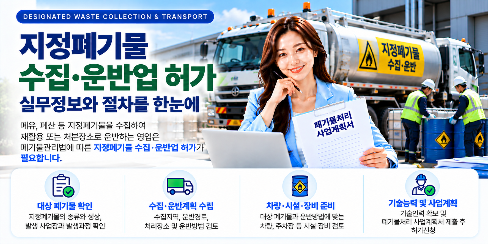
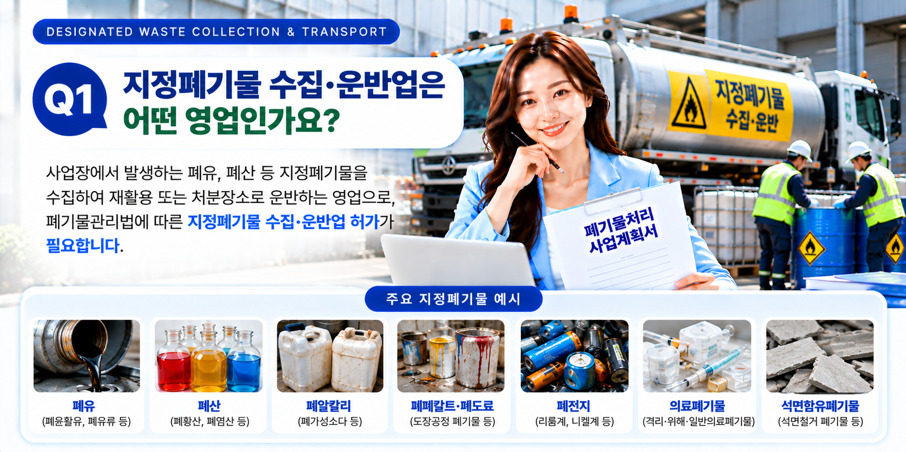
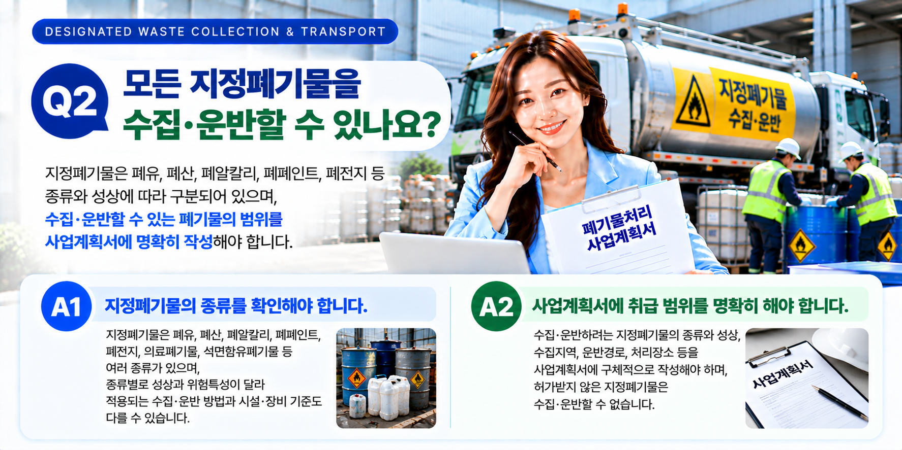
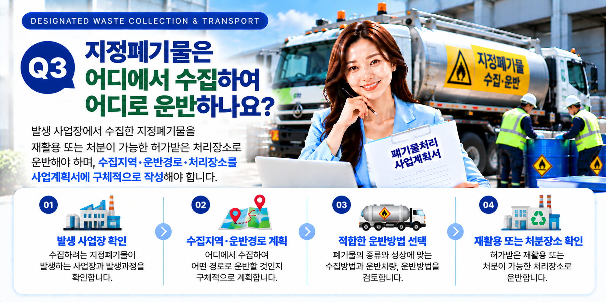

지정폐기물 수집·운반업은 단순히 운반차량만 준비한다고 허가를 받을 수 있는 업무가 아닙니다. 먼저 어떤 지정폐기물을 취급할 것인지 확인하고, 폐기물의 성상과 발생과정, 수집지역과 운반방법, 처리장소 등을 구체화해야 합니다. 이를 바탕으로 필요한 시설·장비 및 기술능력을 검토하고 폐기물처리 사업계획서 제출과 허가신청을 순서대로 준비하는 것이 중요합니다.
01. 지정폐기물 수집·운반업이란?
사업장에서 발생하는 폐기물 가운데 법령상 지정폐기물에 해당하는 폐기물을 수집하여 재활용 또는 처분 장소 등으로 운반하는 영업을 하려는 경우에는 폐기물관리법에 따른 수집·운반업 허가를 검토해야 합니다.
따라서 사업을 준비할 때 가장 먼저 해야 할 일은 실제로 수집·운반하려는 폐기물이 무엇인지, 그리고 해당 폐기물이 지정폐기물에 해당하는지를 구체적으로 확인하는 것입니다.
- 수집·운반하려는 폐기물의 종류
- 폐기물의 액체·고체 등 성상
- 폐기물이 발생하는 사업장
- 폐기물이 발생하는 공정 또는 과정
- 수집·운반 후 인계할 처리장소

02. 취급하려는 지정폐기물의 종류와 성상을 확인합니다
지정폐기물이라고 해서 모두 동일한 방법으로 수집·운반하는 것은 아닙니다. 취급하려는 폐기물의 종류와 성상에 따라 운반방법과 필요한 차량·장비 등을 검토해야 합니다.
| 확인사항 | 주요 검토내용 |
|---|---|
| 폐기물 종류 | 실제 수집·운반하려는 폐기물의 명칭과 지정폐기물 해당 여부 |
| 폐기물 성상 | 액체·고체 등 폐기물의 상태와 수집·운반 시 고려해야 할 특성 |
| 발생 사업장 | 어떤 업종·사업장에서 발생하는 폐기물인지 확인 |
| 발생과정 | 어떤 생산·작업 과정에서 발생하는 폐기물인지 확인 |
03. 수집·운반계획을 구체적으로 정리합니다
사업계획 단계에서는 단순히 지정폐기물을 운반한다는 정도가 아니라 실제 영업방식을 구체적으로 정리하는 것이 중요합니다.
- 어느 지역에서 폐기물을 수집할 것인지
- 어떤 사업장에서 폐기물을 인수할 것인지
- 어떤 방법으로 폐기물을 수집할 것인지
- 어떤 차량과 방법으로 운반할 것인지
- 어디로 운반하여 인계할 것인지
- 수집지역과 운반경로를 어떻게 운영할 것인지
폐기물처리 사업계획서에는 수집·운반계획과 함께 필요한 시설·장비 및 기술능력의 확보계획도 구체적으로 정리할 필요가 있습니다.

04. 필요한 차량·장비와 시설기준을 확인합니다
지정폐기물 수집·운반업은 취급하려는 폐기물의 종류와 성상, 운반방법에 따라 필요한 차량과 장비를 검토해야 합니다.
따라서 차량을 먼저 구입하기보다는 영업대상 폐기물과 실제 운반방법을 먼저 정한 뒤 적용되는 시설·장비 기준을 확인하여 확보계획을 세우는 것이 좋습니다.
시설도 함께 확인합니다
주차장 등 수집·운반업에 필요한 시설의 위치와 규모, 확보방법을 확인하고, 취급하려는 폐기물에 적용되는 구체적인 시설기준도 함께 검토해야 합니다.
05. 주차장과 기술능력도 함께 검토합니다
지정폐기물 수집·운반업에서는 운반차량과 함께 차량을 주차할 수 있는 주차장도 중요한 검토사항입니다.
주차장의 위치와 확보방법을 확인하고, 사업계획서 제출 관할과의 관계도 함께 검토해야 합니다.
기술능력 확보계획
대상 폐기물과 사업내용에 적용되는 기술능력 기준을 확인하고, 필요한 기술인력을 어떤 방식으로 확보할 것인지도 사업계획 단계에서 함께 준비하는 것이 좋습니다.
06. 폐기물처리 사업계획서를 먼저 준비합니다
지정폐기물 수집·운반업은 허가신청에 앞서 폐기물처리 사업계획서를 제출하여 사업계획의 적합 여부를 검토받는 절차가 있습니다.
사업계획 단계의 주요 검토사항
- 영업대상 지정폐기물의 종류와 성상
- 폐기물 발생 사업장과 발생과정
- 수집지역과 수집방법
- 운반경로와 운반방법
- 재활용 또는 처분 등 인계할 처리장소
- 차량·장비 확보계획
- 주차장 등 필요한 시설 확보계획
- 기술능력 확보계획

07. 적합통보 후 허가신청을 준비합니다
폐기물처리 사업계획서에 대해 적합통보를 받으면 통보된 사업계획을 기준으로 필요한 시설·장비와 기술능력 등을 갖추고 본 허가신청을 준비합니다.
08. 신청 전 전체 요건을 다시 확인합니다
지정폐기물 수집·운반업은 폐기물의 종류와 성상, 수집·운반방법, 차량·시설·장비 및 기술능력이 서로 연결되어 있습니다.
따라서 각각의 요건을 따로 준비하기보다는 실제 사업내용과 사업계획서 및 제출자료가 서로 일치하는지를 전체적으로 점검하는 것이 중요합니다.
- 영업대상 지정폐기물이 명확하게 정해져 있는지
- 폐기물의 종류와 성상이 확인되었는지
- 발생 사업장과 발생과정이 정리되어 있는지
- 수집지역·운반경로·처리장소가 구체적인지
- 필요한 차량·장비의 확보계획이 있는지
- 주차장 등 필요한 시설기준을 확인했는지
- 필요한 기술능력을 확보할 수 있는지
- 사업계획서와 실제 사업내용이 서로 일치하는지
지정폐기물 수집·운반업을 준비하고 계신가요?
자가진단을 통해 현재 준비상태를 확인하거나, 취급하려는 폐기물과 사업계획을 기준으로 상담을 신청하실 수 있습니다.
※ 지정폐기물 수집·운반업의 구체적인 시설·장비·기술능력 기준과 제출자료 및 절차는 취급하려는 지정폐기물의 종류·성상, 수집·운반방법 등에 따라 달라질 수 있습니다. 실제 신청 전에는 사업내용과 최신 법령 및 관할기관의 적용기준을 함께 확인하는 것이 좋습니다.